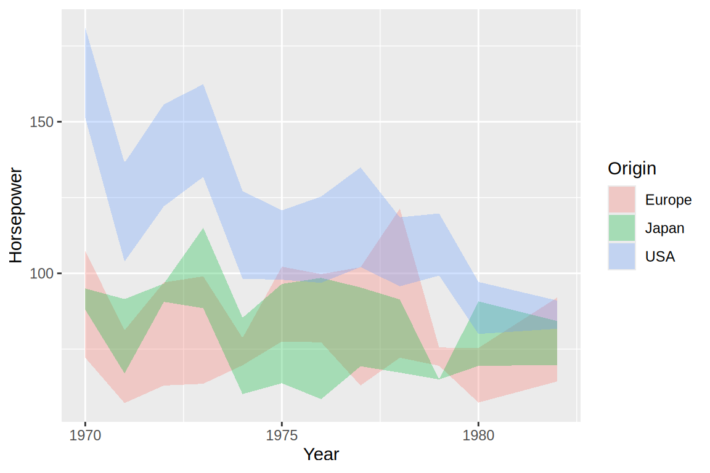
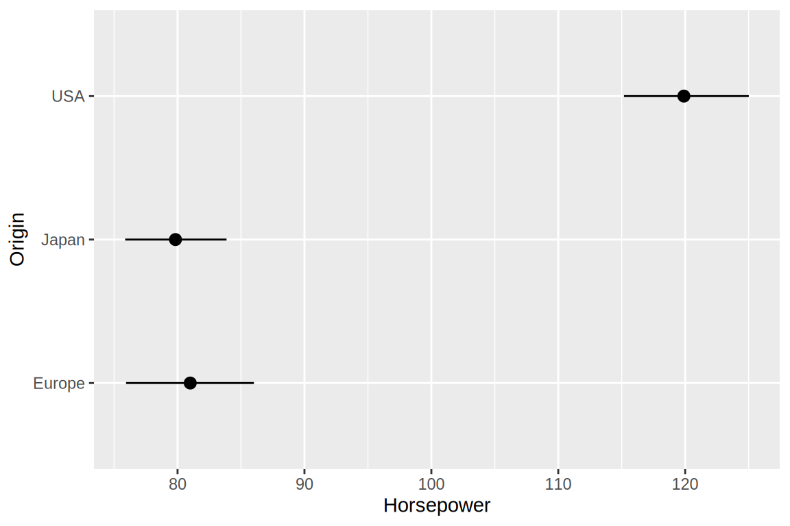
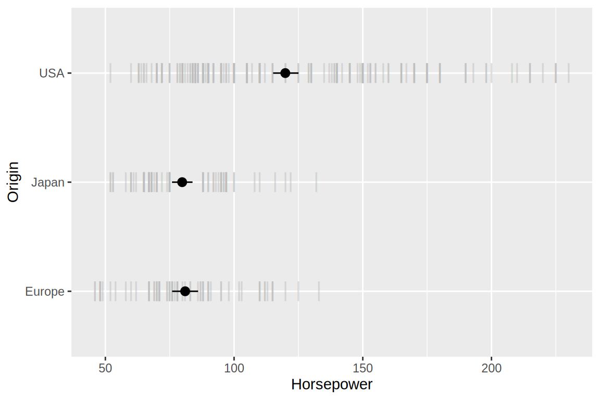
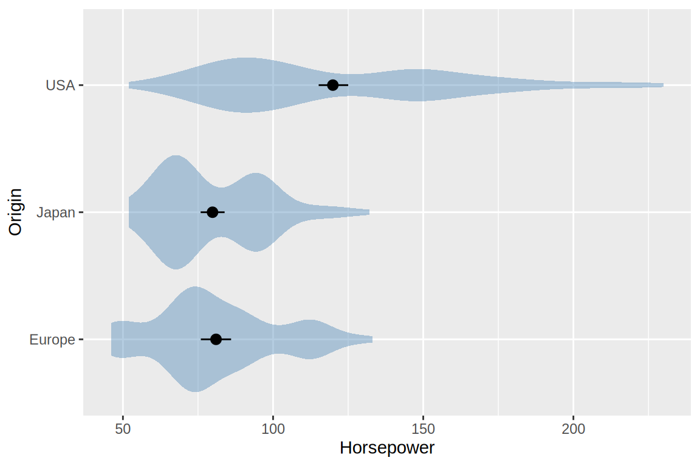

17 Uncertainty
17.1 Why bother?
Showing uncertainty helps readers judge which conclusions the data support, but the visual representation also matters: . We will first explore how to communicate uncertainty, then create interval plots in Altair and ggplot.
17.2 Framing probabilities as frequencies
The lecture’s historical example compares three forecasts of Donald Trump’s chance of winning the 2016 US presidential election. These percentages describe the probability of winning, not the predicted share of votes.

Figure 17.1: Three historical forecasts assign Trump approximately 28%, 15%, and 2% chances of winning. The slide credits Justin H. Gross, Washington Post.
In the theater-seat version below, imagine choosing a seat without seeing its color first. Dark seats represent scenarios in which Trump wins. Even in the first forecast, a dark seat is less likely than a light one, but selecting one would hardly be extraordinary.

Figure 17.2: The same forecasts represented by dark seats among 1,000 seats: 286, 150, and 20 winning scenarios. The first panel uses a finer value than the rounded percentage above. Credit: Justin H. Gross, Washington Post, as cited in the lecture.
The format can show more than a binary win or loss. FiveThirtyEight’s 2020 forecast displayed both a distribution of simulated electoral-vote outcomes and a sample of 100 scenarios. The scenario display combines a frequency statement with the possible margin of victory.

Figure 17.3: Historical FiveThirtyEight forecast distributions for electoral votes.
These are snapshots from the 2020 forecast, not current predictions. Each dot represents a simulated scenario, not a voter. Frequency displays can make unlikely outcomes more tangible, but labels must explain what the marks represent and how they were generated. Too many tiny marks can also become difficult to count.
17.3 Reading error bars and bands
Error bars are compact and useful when comparing many estimates, but their appearance alone does not tell us what they represent.
Figure 17.5: An intentionally unlabeled interval example from the lecture.
In Central tendency & spread, we combined measures of central tendency with indications of how the observations vary. But the spread of the observations and the uncertainty in an estimated mean answer different questions. In Trends, we used lines to summarize horsepower without displaying intervals. Here we group the cars by model year and origin, then add intervals to the annual means. For example, cars can have very different horsepower values even when we have enough observations to estimate their mean relatively precisely.

Figure 17.6: Different intervals for the same chocolate-rating sample. The labels distinguish standard deviation, standard error, and three confidence levels. Adapted from Claus O. Wilke, Fundamentals of Data Visualization, Figure 16.5; data credit: Brady Brelinski, Manhattan Chocolate Society.
A shorter bar does not by itself mean that the data or model are better. Changing from SD to SE changes the question being answered; changing the confidence level changes the interval’s intended coverage. Choose the quantity that addresses the question and label it explicitly.
A confidence interval describes uncertainty in an estimate, in this case the population mean. The interval gives a range of population estimates reasonably compatible with the observed data. For a 95% confidence interval, the precise interpretation is that , provided the method’s assumptions hold. Note that this is not the same as saying that the true population mean has a 95% chance to be contained within a single CI. The population mean is fixed, and it is our construction of the CI that varies depending on the values in our observed data (i.e. our sample from the entire population).
The standard error describes uncertainty in the estimated mean. When its sampling distribution is approximately normal—as is often the case for sufficiently large samples—mean ± one SE is approximately a 68% confidence interval, and mean ± two SE is approximately a 95% confidence interval.
. Bootstrapping is a procedure for estimating the distribution of an estimator (such as the mean) by resampling the observed data. The underlying idea in bootstrapping is that since we don’t have access to data of the entire population and we cannot repeatedly collect new samples from that population, we treat the data we have as the closest approximation of the distribution of the population and draw new samples from our observed data to build a confidence interval for our population mean estimate. You can read more detail about this technique and play around with an interactive chart in the deep dive below.
Figure 17.7: Interactive chart for construction CI via bootstrapping. After clicking a slider you can either drag with the pointer or use the arrow keys to step through the values. The slider reveals a fixed sequence of resamples generated with a random seed, so returning to the same position gives the same result. Notice that every resample still contains 20 observations, even when the histogram contains 500 means. Increasing the number of resamples makes the bootstrap calculation more stable; it does not add new information to the original sample.
Interval endpoints are not walls
Readers can interpret the endpoints of an error bar as the limits of what is possible. This is sometimes called a deterministic construal error: treating an uncertainty display as a hard constraint. An interval summarizing part of a distribution need not contain all its possible values. For a confidence interval, remember that the coverage statement concerns repeated sampling; a particular interval can miss the population quantity.

Figure 17.8: A schematic distribution continues beyond the displayed interval. The drawing illustrates why an interval should not automatically be read as the full range of possible values; it does not specify a confidence level.
Overlap is not a general significance test
The answer depends on the interval definition and the relationship between the estimates, including whether observations are paired.
17.4 Showing alternative outcomes
A single line and shaded band can make one fitted curve seem inevitable, with uncertainty appearing only as a little movement up or down. Showing alternative curves makes the possible variation in shape more explicit.
A hypothetical outcome plot (HOP) cycles through sampled possibilities, rather than drawing them all at once. In this example, each frame shows an alternative fitted curve from the model’s posterior distribution. The animation shows uncertainty in the fitted relationship, not a time sequence in which the cars change.

Figure 17.11: An animated hypothetical outcome plot of alternative fitted curves. Source: Wilke, Fundamentals of Data Visualization, Figure 16.22.
The static comparison above remains useful for print and for readers who prefer to inspect several alternatives at once. For an animation, outcomes should be sampled to represent the modeled uncertainty, rather than selected to exaggerate stability or variation. Rare but important outcomes may need explicit annotation or a separate view, since a short animation can easily omit them.
17.5 Forecast uncertainty is not physical size
Figure 17.12: A hurricane forecast shown as a cone and as a collection of possible tracks, reproduced from the lecture.
The same general lesson applies to statistical bands: explain what is uncertain, what the displayed region means, and which conclusions its boundaries do and do not support. We now turn to constructing intervals with the plotting libraries.
17.6 From trend summaries to intervals
We will use the cars dataset from Vega, available here as a local CSV. Each row describes a car, including its model year, horsepower, and origin. We omit rows with missing horsepower for these examples.
import altair as alt
import pandas as pd
cars = pd.read_csv('data/vega-cars.csv', parse_dates=['Year']).dropna(subset=['Horsepower'])
cars['Year'] = cars['Year'].dt.year
points = alt.Chart(cars).mark_point(opacity=0.3).encode(
x=alt.X('Year:Q').scale(zero=False).axis(format='d'),
y='Horsepower:Q',
color='Origin:N'
)
pointslibrary(tidyverse)
cars <- read_csv('data/vega-cars.csv') |>
drop_na(Horsepower) |>
mutate(Year = lubridate::year(Year))
points <- ggplot(cars, aes(x = Year, y = Horsepower, color = Origin)) +
geom_point(alpha = 0.3) +
scale_x_continuous(breaks = seq(1970, 1982, by = 2))
points
A band describing the spread of observations
First, show the mean plus or minus one sample standard deviation for each combination of origin and year. This describes the spread of horsepower values, not uncertainty in the mean. It is not guaranteed to contain a particular percentage of observations.
mean_line = points.mark_line().encode(y='mean(Horsepower):Q')
points.mark_errorband(extent='stdev', opacity=0.3) + mean_linemean_sdl returns the mean plus or minus a multiple of the standard deviation. Its default multiplier is two, so we explicitly set mult = 1 to match Altair.
ggplot(cars, aes(x = Year, y = Horsepower, color = Origin, fill = Origin)) +
geom_ribbon(stat = 'summary', fun.data = mean_sdl,
fun.args = list(mult = 1), alpha = 0.3, color = NA) +
geom_line(stat = 'summary', fun = mean)
A band describing uncertainty in the mean
To summarize the uncertainty in the mean horsepower for each origin and year, we can draw a confidence band. At each year, the lower and upper edges show the endpoints of an interval; shading connects those intervals across years.
mark_errorband() calculates and draws the interval. Setting extent='ci' requests a 95% bootstrap confidence interval for the mean, calculated separately for each combination of year and origin. The default extent is 'stderr', which instead shows the mean plus or minus one standard error. Use 'stdev' to show one standard deviation. These choices have different meanings, so specify the extent explicitly.
band = points.mark_errorband(extent='ci', opacity=0.3)
bandIn ggplot, we can create confidence bands with geom_ribbon(). Previously we passed summary functions such as mean to fun. Here we use fun.data, because a ribbon needs both a lower and an upper bound.
The mean_cl_boot function returns three values: y, ymin, and ymax. These are the mean and the lower and upper endpoints of its bootstrap confidence interval. The ribbon uses the two endpoints. This function requires the Hmisc package, which is included in the textbook’s R environment.
set.seed(531)
band <- ggplot(cars, aes(x = Year, y = Horsepower, color = Origin, fill = Origin)) +
geom_ribbon(stat = 'summary', fun.data = mean_cl_boot,
fun.args = list(conf.int = 0.95), alpha = 0.3, color = NA)
band
color = NA removes the ribbon’s boundary lines, leaving only the shaded area. The random seed makes the R bootstrap reproducible. Both libraries use bootstrap intervals, but their endpoints can differ slightly because the resamples are random and are generated separately.
Adding the estimated mean
A band shows the interval, but it is also helpful to show the estimate itself. We can add a line for the mean, using the same grouping as the band.
band + mean_lineset.seed(531)
band + geom_line(stat = 'summary', fun = mean)
Similarly, the connecting segments do not establish the mean or its uncertainty at unobserved times, as discussed in Connections.
The cars provide a convenient illustration of the plotting tools. Interpreting these intervals as uncertainty about a broader population would also require justifying how the cars were sampled and whether resampling individual rows is appropriate.
17.7 Confidence bands around fitted trends
We can also show uncertainty around the fitted relationships from Trends. Here we return to horsepower versus acceleration time, fitting a separate relationship for each origin. Acceleration time is measured in seconds to reach 60 mph, so larger values indicate slower acceleration.
For example, scikit-learn fits could be bootstrapped by repeatedly resampling the observations and refitting the model, but scikit-learn does not supply these confidence bands automatically. We use ggplot for the compact examples here.
Adding mark_errorband(extent='ci') to the raw data would instead calculate separate bootstrap intervals at each acceleration time; those would not be confidence intervals for the fitted regression or LOESS curve.
For linear regression, geom_smooth(method = 'lm') can display both the fitted line and a confidence band. We explicitly set se = TRUE and level = 0.95, although these are the defaults. Despite the argument’s name, se = TRUE enables a confidence band; it does not request a band of plus or minus one standard error. Mapping both color and fill to origin gives each line and its band matching colors.
trend_points <- ggplot(
drop_na(cars, Acceleration),
aes(x = Acceleration, y = Horsepower, color = Origin, fill = Origin)
) +
geom_point(alpha = 0.2) +
labs(x = 'Acceleration time (seconds)')
trend_points + geom_smooth(method = 'lm', se = TRUE, level = 0.95)`geom_smooth()` using formula = 'y ~ x'
The shaded region is a pointwise 95% confidence interval for the fitted mean horsepower. It is not a standard-deviation band or a prediction interval for individual cars. These intervals use the linear model’s estimated standard errors and a t-distribution, rather than the groupwise bootstrap calculation used earlier.
We can also show a confidence band around a LOESS curve. Here we use R’s local quadratic, non-robust fit and a span of 0.75, making those defaults explicit.
trend_points + geom_smooth(method = 'loess')`geom_smooth()` using formula = 'y ~ x'
For LOESS, ggplot uses an approximate pointwise confidence interval based on the smoother’s estimated standard errors and a t-based approximation. The curve and band depend on the chosen span and fitting settings; the band does not account for uncertainty about which smoothing settings to choose.
In both charts, the bands describe uncertainty in the fitted mean relationship, not the spread of the underlying observations. Keeping the points visible helps distinguish those two quantities. As with the annual-mean intervals, pointwise 95% coverage does not imply 95% simultaneous coverage of the entire curve.
17.8 Confidence intervals around individual estimates
For comparisons between categories, an interval around a point can be easier to read than a band. Here we pool the years and estimate mean horsepower separately for each origin. This answers a different question from the preceding year-by-year comparison.
mark_errorbar() displays an interval around a single estimate. As with the band, extent='ci' requests a 95% bootstrap interval for the mean.
err_bars = alt.Chart(cars).mark_errorbar(
extent='ci', rule=alt.LineConfig(strokeWidth=2)
).encode(
x='Horsepower:Q',
y='Origin:N'
)
err_barsWe can add the mean as a point.
mean_points = err_bars.mark_point(color='black', filled=True).encode(
x='mean(Horsepower):Q'
)
err_bars + mean_pointsgeom_pointrange() displays both the mean and its interval. It uses all three values returned by mean_cl_boot. With horsepower on the x-axis and origin on the y-axis, the intervals are horizontal.
set.seed(531)
ggplot(cars, aes(x = Horsepower, y = Origin)) +
geom_pointrange(stat = 'summary', fun.data = mean_cl_boot)
17.9 Showing the observations alongside uncertainty
A mean and its confidence interval can still hide the distribution of the data. Adding faded marks for individual observations lets the reader distinguish the spread of the cars’ horsepower values from uncertainty in their mean.
Draw the observations as light ticks first, so that the interval and mean remain visible on top.
observations = err_bars.mark_tick(color='lightgrey', opacity=0.5)
observations + err_bars + mean_pointsWe can use a vertical bar as the point shape to create the same kind of display.
set.seed(531)
ggplot(cars, aes(x = Horsepower, y = Origin)) +
geom_point(shape = '|', color = 'grey', alpha = 0.5, size = 5) +
geom_pointrange(stat = 'summary', fun.data = mean_cl_boot)
As a ggplot-specific alternative, a faded violin can provide an overview of each distribution. The point here represents the mean, unlike the median often shown inside a violin.
set.seed(531)
ggplot(cars, aes(x = Horsepower, y = Origin)) +
geom_violin(color = NA, fill = 'steelblue', alpha = 0.4) +
geom_pointrange(stat = 'summary', fun.data = mean_cl_boot)